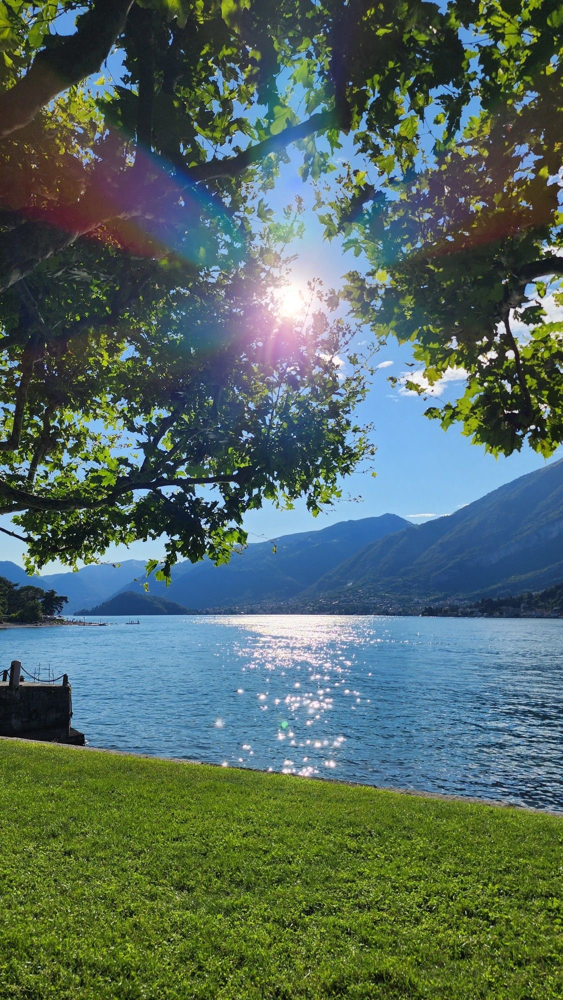
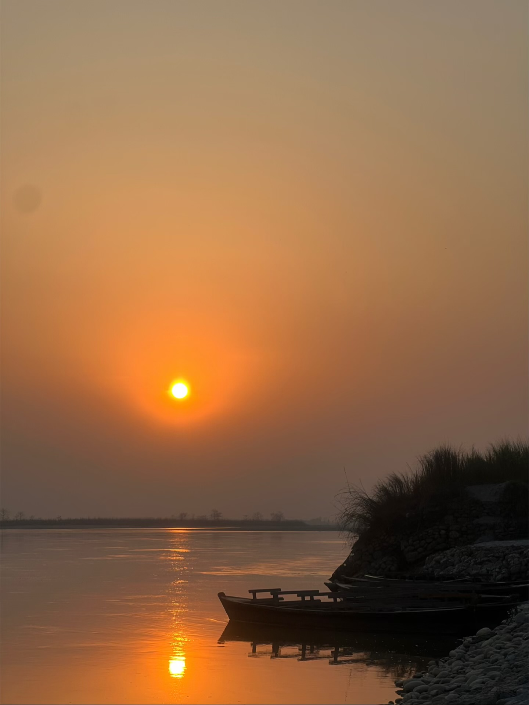

.jpeg)
01
A Break From Everyday Life
Modern life can become busy with studying, assignments, technology and other responsibilities. Whenever I have free time, I enjoy taking a break and spending some time outdoors.
Being surrounded by trees, fresh air and open spaces helps me feel calm. Even a short walk outside can make a big difference to my mood and help me return to my work with a clearer mind.

02
Exploring the Outdoors
I enjoy exploring natural places during my free time. Visiting parks, walking around quiet places and experiencing different landscapes gives me a chance to step away from screens and daily routines.
Nature also gives me an opportunity to appreciate simple things. The sound of water, the movement of trees and the view of mountains can make an ordinary day feel much more peaceful.

03
Why Nature Matters to Me
For me, spending time in nature is not only about travelling or visiting beautiful places. It is also about taking time for myself and creating a balance between work and relaxation.
I believe that having time away from studying and technology helps me feel refreshed. Nature gives me space to think, reflect and enjoy the present moment.
Making Time for the Simple Things
Free time does not always need to be filled with something complicated. Sometimes a quiet walk, a beautiful view or simply sitting outside is enough. Spending time in nature reminds me to slow down, appreciate my surroundings and enjoy the simple moments in life.
Written by Aayushma | 2026